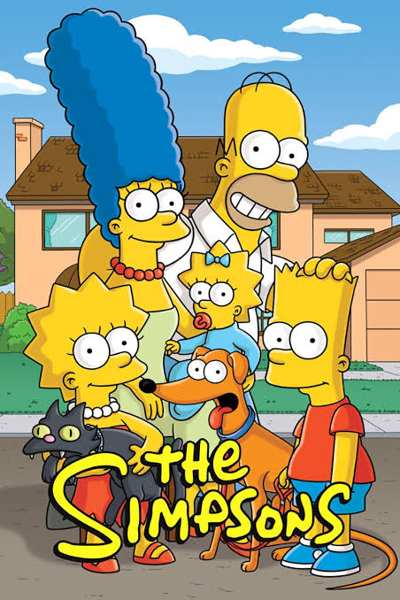
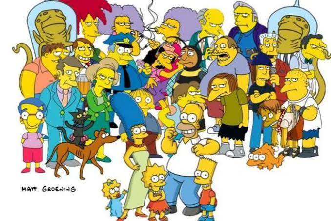
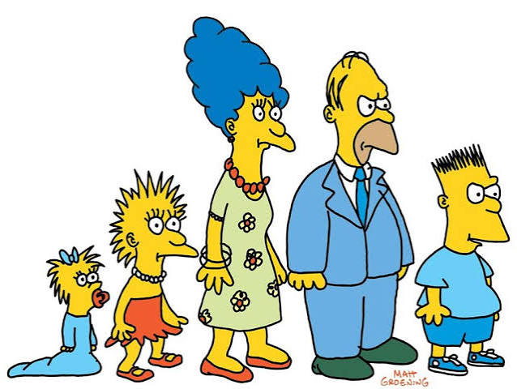
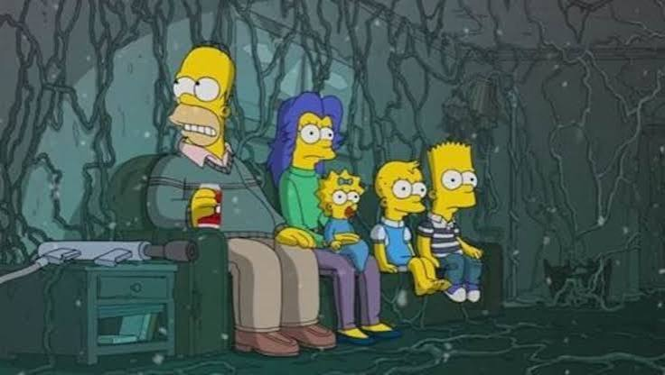
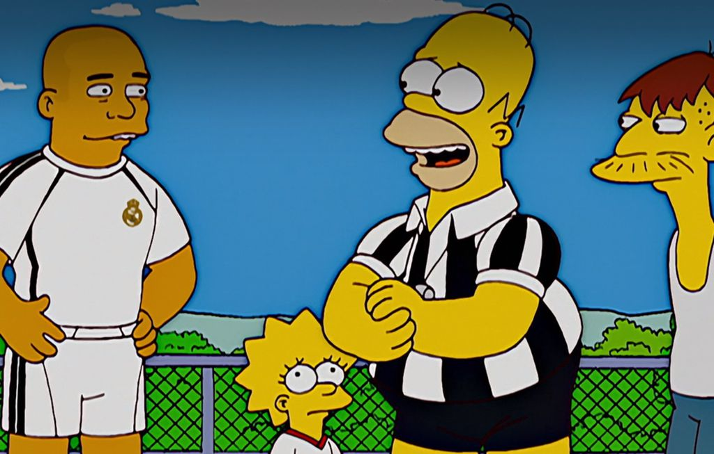

Os Simpsons
Bem-vindo à nossa página Wiki dedicada à série de animação "Os Simpsons". Aqui você encontrará informações sobre os personagens, episódios e curiosidades da série.

The Simpsons (bra/prt: Os Simpsons) é uma sitcom animada norte-americana criada por Matt Groening e desenvolvida por James L. Brooks e Sam Simon para a Fox Broadcasting Company. A série é uma paródia satírica do estilo de vida da classe média dos Estados Unidos, personificada pela família Simpson, composta por Homer, Marge, Bart, Lisa e Maggie. Ambientada na cidade fictícia de Springfield, em um local não especificado nos Estados Unidos, a série caricatura a sociedade, a cultura ocidental, a televisão e a condição humana.
A família foi concebida por Groening pouco antes de uma solicitação para uma série de curtas de animação com o produtor Brooks. Ele elaborou uma família disfuncional e nomeou os personagens como os membros de sua própria família, substituindo o seu próprio nome por Bartholomew (Bart). Os curtas tornaram-se parte do programa The Tracey Ullman Show em 19 de abril de 1987. Após três temporadas, o projeto foi transformado em um programa para o horário nobre, tornando-se primeira série da rede a figurar na lista dos 30 programas mais assistidos da temporada televisiva de 1989-1990.
Desde sua estreia, em 17 de dezembro de 1989, 790 episódios da série já foram exibidos. É a série animada norte-americana de maior duração, a sitcom norte-americana de maior duração e o programa de horário nobre há mais tempo em transmissão. Um longa-metragem, The Simpsons Movie, foi lançado nos cinemas do mundo todo em 27 de julho de 2007, com sucesso de crítica e público, com uma sequência em desenvolvimento em 2024. A série também gerou inúmeras histórias em quadrinhos, jogos eletrônicos, livros e outras mídias relacionadas, bem como uma franquia de merchandising bilionária. The Simpsons foi inicialmente uma produção conjunta da Gracie Films e da 20th Television; o envolvimento da 20th Television foi posteriormente transferido para a 20th Television Animation, uma unidade separada da Disney Television Studios. Em 2 de abril de 2025, a série foi renovada para quatro temporadas adicionais na Fox, com 15 episódios cada.
The Simpsons é amplamente considerada como uma das maiores séries de televisão de todos os tempos, recebeu grande aclamação durante suas primeiras temporadas na década de 1990, que são geralmente consideradas sua "era de ouro". A revista Time classificou a série como a melhor do século XX, e Erik Adams, do The A.V. Club, o chamou de "a maior conquista da televisão, independentemente do formato". Em 14 de janeiro de 2000, a animação foi homenageada com uma estrela na Calçada da Fama de Hollywood, na Califórnia. A série já venceu inúmeros prêmios desde a sua estreia, incluindo 37 Primetime Emmy Awards, 30 prêmios Annie e um 2 prêmios Peabody. A expressão exclamativa utilizada por Homer, "D'oh", foi incluída no Oxford English Dictionary, enquanto a série tem influenciado várias sitcoms direcionadas ao público adulto.
Personagens
A série apresenta uma variedade de personagens icônicos, incluindo Homer, Marge, Bart, Lisa e Maggie Simpson, além de muitos outros moradores da cidade de Springfield.

A série é focada nas aventuras de uma típica família suburbana do meio-oeste estadunidense. O pai, Homer Simpson, é inspetor de segurança da Usina Nuclear de Springfield. Marge Simpson, sua esposa, é uma dona de casa estereotipada. O casal tem três filhos: Bart, um garoto rebelde de dez anos; Lisa, uma menina-prodígio de oito anos que adora tocar saxofone e Maggie, a caçula da família, uma bebê que não fala - sua primeira palavra foi "papai", no episódio "Lisa's First Word" - mas que é considerada pelos fãs como a mais inteligente e misteriosa personagem da série (que depois é revelado que toca saxofone melhor que Lisa, no episódio "Smart and Smarter").
Completam a família um cachorro chamado Ajudante do Papai Noel, além de um gato chamado Bola de Neve. Os produtores decidiram que os personagens não envelheceriam ao longo da série, embora celebrações como festas religiosas e de fim de ano apareçam com frequência. Há ainda um grande número de personagens menores, desde parentes da família até coadjuvantes eventuais. O programa inclui um conjunto de personagens peculiares: amigos de trabalho, professores, amigos, familiares, parentes, moradores e celebridades locais. Os criadores originalmente destinaram muitos desses personagens para preencheram funções na cidade. Alguns deles ganharam papéis que se expandiram e, posteriormente, atuaram em seus próprios episódios. De acordo com Matt Groening, o show adotou o conceito de um grande elenco de apoio de uma sitcom.
Desenvolvimento

O criador de The Simpsons, Matt Groening, concebeu a ideia da série na sala de espera do escritório de James L. Brooks, produtor do The Tracey Ullman Show, que desejava incluir pequenos esboços de animação antes e depois dos intervalos comerciais. Brooks havia pedido a Groening que lhe desse uma ideia para uma série de curtas animados. Groening tinha a intenção de apresentar sua série em quadrinhos chamada Life in Hell. No entanto, Groening percebeu que a animação de Life in Hell implicaria na rescisão dos direitos de publicação de sua obra. Ainda na sala de espera, ele escolheu criar novos personagens, formulando sua própria versão de uma família disfuncional. Para nomear os personagens, Groening usou o nome de alguns de seus familiares.
A família Simpson fez sua primeira aparição em curtas animados exibidos no The Tracy Ullman Show em 19 de abril de 1987. Groening elaborou aos animadores pequenos esboços, presumindo que eles iriam ser melhorados no processo de produção. No entanto, os animadores simplesmente reproduziram seus desenhos, o que deu origem à aparência imperfeita dos personagens nos primeiros curtas. A animação foi produzida domesticamente nos estúdios da Klasky Csupo, sendo que Wes Archer, David Silverman e Bill Kopp foram os animadores da primeira temporada. Gyorgyi Peluce foi quem decidiu colorir os personagens de amarelo.
Em 1989, uma companhia de produção transformou The Simpsons em uma série de meia hora para a Fox Broadcasting Company (FOX). Brooks negociou uma cláusula no contrato com a Fox que impedia a emissora de interferir no conteúdo do programa. Groening disse que seu objetivo ao criar o programa era o de oferecer ao público uma alternativa ao "lixo mainstream" que assistiam.
A série de meia hora estreou em 17 de dezembro de 1989, com o especial de Natal "Simpsons Roasting on an Open Fire". "Some Enchanted Evening" foi o primeiro episódio produzido, mas foi transmitido em maio de 1990 como o último episódio da primeira temporada, devido a problemas na animação. Em 1992, Tracey Ullman moveu uma ação judicial contra a Fox, alegando ser a fonte do sucesso da série. Na ação, Tracey desejava receber uma parte dos lucros de The Simpsons, o que foi rejeitado pelos tribunais.
Marcas Registradas
Sequência de abertura
A sequência de abertura de The Simpsons é uma das características mais marcantes da série. A maioria dos episódios são abertos com a câmera passando do título do programa para a cidade de Springfield. A câmera então segue os membros da família a caminho de casa. Ao entrar em sua casa, os Simpsons sentam em seu sofá para assistir televisão. A abertura foi criada por David Silverman. Foi a primeira tarefa que ele fez quando a produção do programa começou. A música da série foi composta pelo músico Danny Elfman em 1989, após Groening se aproximar dele pedindo uma música estilo retrô. Esta abertura tem sido considerada por Elfman como a coisa mais popular de sua carreira.
Um dos aspectos mais distintos da abertura são as três mudanças de episódio para episódio. As três mudanças são: Bart escreve coisas diferentes no quadro-negro da escola, Lisa tem solos diferentes em seu saxofone (menos nas primeiras temporadas, em que o solo é o mesmo) e as cenas de quando a família entra na sala de estar para se sentar no sofá podem mudar. Em 15 de fevereiro de 2009, uma nova sequência de abertura foi introduzida para acompanhar a transição para HDTV. A sequência tinha todas as características da abertura original, mas foram acrescentados vários detalhes e personagens.
Episódios de Halloween

O episódio especial de Halloween se tornou uma tradição anual. "Treehouse of Horror" foi ao ar pela primeira vez em 1990, como parte da segunda temporada. Foram separadas três histórias diferentes para cada episódio de Dia das Bruxas. Estes episódios geralmente envolvem a família em alguns momentos de horror, ficção científica ou de fenômenos sobrenaturais e, muitas vezes, parodiam filmes do gênero. Eles sempre acontecem fora da continuidade normal do programa. Embora a série Treehouse seja feita para ser vista no Halloween, nos últimos anos, novos episódios foram lançados depois do Halloween, devido o atual contrato da Fox Series com a Major League Baseball.
Humor

O humor do programa se baseia em referências culturais que cobrem um vasto espectro da sociedade para que os telespectadores de todas as gerações possam apreciar a série. Tais referências, por exemplo, vêm de filmes, programas de televisão, música, literatura, ciência e desenhos animados. Também são adicionadas piadas ou histórias vistas para o segundo plano humorístico do programa ou através de pedaços incongruentes de texto em placas, jornais e em outros lugares. O público, pode muitas vezes não perceber as piadas visuais em uma única visualização. Algumas são tão rápidas que só é possível perceber a piada visual se pausar uma gravação de vídeo do programa. Kristin Thompson argumenta que The Simpsons usa uma "enxurrada[...] de referências culturais, caracterização intencionalmente incoerente e considerável auto-reflexividade sobre as convenções de televisão e o status do programa é como de um programa de televisão."Uma das marcas registradas no início, eram voltadas para as brincadeiras de Bart com o proprietário da Taverna do Moe, Moe Szyslak. Moe tenta encontrar Bart no bar, mas logo percebe que é um trote e fica com raiva e o ameaça.Como a série progrediu, tornou-se mais difícil para os escritores a chegar a um nome falso e escrever uma resposta irritada do Moe e as brincadeiras deixaram de ser regulares durante a quarta temporada.
The Simpsons também influencia, frequentemente, o humor autorreferencial. A forma mais comum está nas piadas sobre a Fox. A série usa frases de efeito e a maioria dos personagens primários e secundários têm pelo menos uma cada. Entre as expressões notáveis a de quando Homer fica irritado e diz "D'oh!", o "Excelente ..." do Sr. Burns e o "Ha-ha!" Nelson. Bart também possui frases de efeito, como "¡Ay, caramba!", "Não tem uma vaca, cara!", "Coma meus shorts!" e "Eu não fiz isso!". Mais passado um tempo, essas frases de efeito não foram mais pronunciadas, com exceção de "¡Ay, caramba!". No episódio "Bart Gets Famous", Bart fica famoso no programa do Krusty ao pronunciar a frase: "Eu não fiz isso."